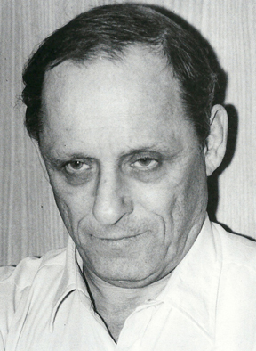
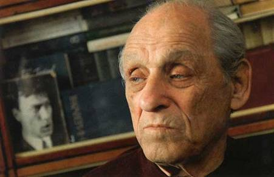

вверх | назад
|
Наум БАСОВСКИЙ
ОН БЫЛ ДЛЯ МЕНЯ ВЕСТНИКОМ

Трудно писать о Ревиче. Не только потому, что душа и разум никак не хотят мириться с его уходом, не могут совладать с огромностью этой утраты, и вот уже почти полгода я практически ежедневно думаю о нём и продолжаю – увы, мысленно – наши с ним диалоги. Трудно ещё и потому, что дружба наша была необычной – долгой по времени, но почти лишённой сюжетов непосредственного, лицом к лицу, общения: всего несколько личных встреч – и более двадцати лет активной переписки, продолжительных телефонных разговоров и с годами всё большего душевного срастания. А пересказать телефонные беседы и проявлявшиеся в них душевные движения – задача почти невозможная. В одной из таких бесед Александр Михайлович сказал, имея в виду представителей нового (в то время) литературного направления: «Они всё хотят быть, а надо не хотеть, а просто быть». За точность передачи его слов ручаюсь. А вспомнил их потому, что Александр Ревич БЫЛ, ИМЕННО БЫЛ: замечательным поэтом, первоклассным переводчиком поэзии, ее глубоким знатоком, доброжелательным наставником молодых (и не очень молодых) литераторов… да просто умным, добрым, сердечным человеком. Об этом ниже и пойдёт речь. Когда приходит твой черёд писать воспоминания, надеешься, что тебе удастся избегнуть греха, который один остроумец назвал «просебятиной». И вдруг видишь, что и тебе волей-неволей придётся говорить и про себя, потому что ведь в течение многих лет общался и дружил с Александром Ревичем не кто-то вообще, а конкретно я, живой человек, со своими достоинствами и недостатками, слабостями и успехами, в частности в литературе, в поэзии. Приходит осознание того, кем был для меня Александр Михайлович. Да, близким, фактически родным человеком, с которым меня объединяло созвучное понимание поэзии и служения ей. Но в первую очередь Александр Ревич был для меня ВЕСТНИКОМ. Попытаюсь сразу же объяснить, что я вкладываю в это понятие. В моей поэме «Городские прогулки» есть такая строчка: «Никогда не известно, кто нам Божьи выскажет знаки». Так вот, в течение всех лет нашего знакомства и дружбы А.М. был именно тем человеком, который для меня транслировал Божьи знаки. Происходило это неоднократно. Об этом я и попробую написать.
1.
Мой старший друг и первый поводырь по дорогам поэзии Анисим Максимович Кронгауз, когда заходила речь о возможности опубликовать что-то из мною написанного, в течение долгого времени неизменно отвечал примерно так: «Сегодня вы пишете, как пишут сотни. Нужно добраться хотя бы до уровня десятков. Тогда публикации придут сами – или станут для вас делом третьестепенным». Чтобы добраться до уровня десятков (по критериям Кронгауза), понадобилось ни много ни мало одиннадцать лет. Прошли публикации в «Новом мире» и «Юности», «Неве», «Студенческом меридиане», «Московском комсомольце»… И только тогда Анисим Максимович дал добро на мой выход в «большую печать». Летом 1977 года мы собрали с ним папку средних размеров и поехали в издательство «Советский писатель». Здесь нужно сказать, что Кронгауз был очень больным человеком и дом свой покидал крайне редко. Видимо, в издательстве об этом хорошо знали, потому что его появление было воспринято там как нечто из ряда вон выходящее. Наверное, потому и папку мою приняли к рассмотрению, невзирая на то, что я не был членом СП и по статусу претендовать на публикацию у них не мог. Понятно, что успех – а это был всё-таки первый успех на долгом и тернистом пути! – следовало отметить, и мы пошли в ресторан ЦДЛ, где скромно, но хорошо «посидели». Это были мои первые «профессиональные посиделки». В какой-то момент я увидел, что лицо Анисима Максимовича озарилось совершенно детской улыбкой, и он, глядя на входную дверь, сказал: «Там Алик Ревич! Позовём его к нам!» И к нашему столику подошёл тот, кого Кронгауз назвал Аликом, – седеющий мужчина средних лет с точно такой же совершенно детской улыбкой. Мы познакомились и выпили за знакомство, а потом, когда объяснили, почему мы здесь, ещё и за успех «нашего предприятия». Затем Ревич приблизил к нам своё лицо и сказал тихо: – Ребята, у меня в сумке лежит нечто такое, о чём вы даже понятия не имеете! Мне дали на несколько дней… Но я не могу показать ЭТО здесь. Анисим, поехали к тебе, вы не пожалеете! И мы вернулись в дом Кронгауза, теперь уже втроём. «ЭТО» оказалось собранием стихотворений Владислава Ходасевича, отпечатанным на пишущей машинке, – по-видимому, какая-нибудь шестая копия на папиросной бумаге. Читать было очень трудно, но сами стихи!.. А если к этому добавить, что для меня это было вообще первое в жизни знакомство с Ходасевичем, то, как говорится, комментарии будут излишни. И я обнаглел настолько, что попросил у Ревича разрешения взять весь материал домой и сделать перепечатку для него, для Кронгауза и для себя тоже. Подумайте: человек, которого Александр Михайлович видит впервые в жизни, просит взять тексты, за распространение которых в то время можно было и срок схлопотать! Тем не менее, Ревич согласился. Много лет спустя я спросил его, почему. Он очень просто ответил: «Ваше лицо располагало к доверию». Одно из тех движений его души, одна из тех чисто ревичских похвал, которые становились твоим моральным багажом. Через несколько дней мы снова встретились у Кронгауза. Ходасевич был теперь нашим достоянием на троих. В знак такого доверительного знакомства Александр Михайлович подарил мне свой только что вышедший сборник «Единство времени» с такой надписью: «Науму Басовскому на добрую память с надеждой на дружбу. А. Ревич, 23 июля 1977». (В этих словах – весь замечательный Ревич: ведь при тогдашней разнице наших литературных статусов это я должен был надеяться на дружбу!) Могли ли мы оба в тот далёкий день думать, насколько пророческой окажется эта надпись!
2.
Мои предпочтения в русской поэзии ХХ века формировались медленно и прихотливо – в зависимости от возможностей чтения (по времени) и возможностей осмысления (по возрасту). С 1977 года на первую строчку вышел (и навсегда остался) Ходасевич. При всём уважении к другим великим русским поэтам и даже преклонении перед ними именно Ходасевич определил мой дальнейший поэтический путь: его поэтика оказалась для меня самой органичной и самой притягательной. И я всегда помню, что в тот период, когда я ещё был в поиске, Александр Михайлович оказался тем ВЕСТНИКОМ, который помог сделать выбор. И тогда же, после прочтения «Единства времени», к числу «самых-самых» добавился Ревич. Особенно я полюбил «Поэму о позднем прощании» – полюбил настолько, что даже написал своё стихотворение о Кракове, в котором никогда не был (и тогда, и сейчас). Но я побывал в нём, не выходя из своего дома, – настолько польский город был живым в поэме. Естественно, что стихотворение это я посвятил Александру Ревичу. Кронгауз, прочитав его, тут же позвонил Александру Михайловичу и зазвал к себе. Мы снова встретились, замечательно поговорили – после чего, увы, в нашем общении наступил длительный перерыв… Причин было много: усугубившаяся болезнь Кронгауза, мои собственные житейские неурядицы, издательская волынка в «СП» с моей рукописью – да просто жизнь с её заботами, рутиной и непредсказуемостью. Прошло двенадцать лет. Ушел из жизни Анисим Кронгауз. В стране началась перестройка. Совершенно неожиданно, когда я потерял уже все надежды на выход книги, она всё-таки увидела свет в 1989 году, да ещё и при таких невероятных (и невозможных в предыдущие годы) обстоятельствах: поскольку как раз в это время была отменена цензура, редактор рукописи дал мне возможность переформировать её, и я собрал совершенно новую книгу, соответствующую моему уровню того времени. Называлась она «Письмо заказное», и стихотворение «На бумаге с водяными знаками…», то самое, посвященное Ревичу, в ней было. Разумеется, Ревич присутствовал и в том недлинном списке людей, которым я решил свою первую книгу подарить. Все мои адресаты откликнулись тёплыми, сердечными словами, не было ни одного вежливо-формального ответа. Но даже на этом хорошем человеческом фоне самым протяжённым по размеру и самым страстным по содержанию был отклик Александра Михайловича.
«Спасибо за тёплое письмо, – писал он. – Мне кажется, что наши (по Вашей инициативе) вновь пересекшиеся пути надо бы и дальше не разъединять. Книгу прочёл и страшно возликовал, увидев весьма органичное письмо, ни на кого не похожее, всё построенное на живой естественной человеческой интонации, такой достоверной и искренней, что и слёзы и улыбку выжимает. А что может быть выше при оценке поэзии? Но самое главное – меня потрясла Ваша кажущаяся изначальная простота, которая оборачивается пространственной многослойной глубинностью. Это то, что я сам в себе десятилетиями культивировал (т.е. пытался воспитать). Вы владеете абсолютно тем, что я называю «пластическим пространством». У Вас, как у всякого поэта, который не работает, а, как демиург, строит видимый мир, огромное и победное значение играет изобразительность, и врёт аннотация, что Вы график, хотя Вы, конечно, и график, но Ваше изображение и живописно (на приглушённом цвете), а главное, объёмно и динамично, как в кино. <…> При полном несходстве наших с Вами манер я с радостью обнаружил наше внутреннее родство. Об этом мы при оказии поговорим подробно. Главное, Вы поэт и по-моему очень хороший. Эти два дня я читаю Ваши стихи всем, кто мне звонит или заходит ко мне. Вы отбили меня от работы. Я давно уже не испытывал такой радости от чужих стихов. А что касается родства, я, как Вы, возможно синхронно, потянулся к Ходасевичу (к стихам и личности) и даже написал стихи о Неаполе, где мне привиделся Ходасевич. В общем – фантастика! <…> Обнимаю Вас и поздравляю с очень хорошей, чистопробной книгой. Ваш А. Ревич».
Думаю, любой автор мечтает получить такой отклик на свою первую книгу. Возможно, не следовало мне так подробно приводить похвалы в свой адрес, не очень это в моих правилах. Но делаю это исключительно для того, чтобы показать реакцию Ревича. Много вы знаете поэтов, которые могут ТАК радоваться чужому успеху? В моём круге общения – раз-два, и обчёлся…
3.
Моя первая книга «Письмо заказное», к сожалению, на долгие годы стала единственной, вышедшей в России. А «вновь пересекшиеся пути» довольно скоро опять разъединились, на сей раз ещё более драматично. В феврале 1992 года я вместе с семьей уехал в Израиль. Перед отъездом мы с женой дважды были у Ревича, к этому периоду я ещё вернусь чуть позже. Но до этого у нас были продолжительные телефонные беседы такого уровня понимания и взаимной симпатии, на которые я не мог надеяться даже в самых смелых мечтах. О чём только не было переговорено! О прошлом и будущем, о поэзии и политике, о классиках и наших современниках. А чего стоят, к примеру, такие ситуации, когда звонит А.М. и говорит: – Срочно бегите на Кузнецкий, там в «Лавке писателей» продают Бенедикта Лившица! Вы ещё успеете! Так в мою жизнь вслед за Ходасевичем вошёл совершенно мне тогда неизвестный Бенедикт Лившиц, и, забегая вперёд, могу сказать, что один только перечень имён, пришедших ко мне от Ревича, окажется весьма протяжённым. Уже в Израиле в одном из телефонных наших разговоров прозвучало: «В Москве вышел большой том Шенгели. Думаю, великим придётся потесниться и принять ещё одного в свои ряды!» Вскоре том Георгия Шенгели «Иноходец» стоял на моей книжной полке. Потом почти такая же история произошла с Аркадием Штейнбергом. Потом… Александр Големба и Надежда Мальцева, Евгений Витковский и Илья Крупник, Вадим Перельмутер и Александр Эбонаидзе, Галина Климова и Владислав Залещук – все эти имена возникали в нашей переписке и телефонных беседах, и о каждом А.М. говорил и писал подробно, любовно, с множеством точных примет лица и творчества. Специально отмечаю эту черту Ревича ещё раз, ибо такое душевное качество – немалая редкость в наши дни. Но, естественно, речь шла не только о так называемых «персоналиях». Были, и неоднократно, оценки нынешнего состояния русской поэзии в целом и сравнения с минувшими годами и веками. Не всегда эти суждения Александра Михайловича были академически беспристрастными – наоборот, частенько очень даже пристрастными, сугубо личными, – но всегда основательными, глубокими, базирующимися на его большом и нередко трудном опыте. Один только пример - очень характерное место из письма от 9 октября 1992 года: «…всё же мы живём не так страшно, как о нас пишут и вещают. Трудно – это так. Стало трудней, чем при вас, так как мы всё-таки угодили в гиперинфляцию, хотя нас уговаривают в обратном. Рубль уже так рухнул, что доллар стоит на разменной бирже около 360 рублей. Соответственно все цены стали астрономическими. Но ведь через такое прошли многие страны Европы и Россия в результате Первой мировой и разных революций. Уже расплачивались «лимонами» - деньгой с 6 нулями и более. Думаю, проживём. Хуже другое: культура мало нужна, но и это, помыслив, можно решить позитивно. Сейчас не печатают и негде печататься. Не страшно. За писание не платят. Значит, надо материально как-то выкручиваться, а писать бескорыстно, как всегда писали настоящие поэты. Словом, теперь самое время бескорыстно и безоглядно писать в стол. Значит, время великолепно». И вот другой фрагмент, через 5 с лишним лет, из письма от 20 марта 1998 года: «В мире происходят чудеса. Пишу вам, помечаю в правом углу страницы дату и ловлю себя на том, что астрономическое время (земное, собственно) близится к концу века, эпохи, тысячелетия. Тут и до вечности недалеко». Вот масштаб размышлений истинного поэта!
4.
Мне бы очень не хотелось создать впечатление, что Ревич был эдаким добрым дядей, который всех хвалит и всё принимает. Отнюдь! Даже и в адрес весьма громких имён, в адрес поэтов, стоящих на очень высоких местах в негласной литературной «иерархии», мне не раз и не два доводилось слышать из уст А.М. резкие, язвительные, а то и просто уничижительные оценки. В каких-то случаях я с ними соглашался, в каких-то – нет, возражал ему, он вроде бы принимал мои доводы, но – свою позицию не менял! Ибо это была ПОЗИЦИЯ, а не минутное раздражение, как это обычно бывает и чаще всего по недостаточному знанию предмета. Он, Ревич, именно что ЗНАЛ предмет досконально и позицию строил на этом.

То же могу сказать и об его оценке конкретно моих сочинений – а такая оценка давалась всякий раз по получении им новой порции моих стихотворений, как напечатанных, так и в рукописи, это происходило в течение всех лет нашего общения (он мне тоже присылал свои новые стихи – или читал по телефону – и всегда ждал оценки). Так вот, вспоминается разговор в письмах о моих стихах, которые были написаны в самый первый период после переезда в Израиль. Высоко оценив многие из них, А.М. всё же счёл нужным указать на определённый, по его мнению, недостаток: «Вы иногда заигрываетесь с длинной строкой, часто дважды цезурированной. Вам не всегда при этом хватает естественного дыхания, и приходится его прерывать». Я отвечал ему, что чувствую, как уходит от меня то постоянное стремление к строгому ритму и открытой напевности стиха, которое было всегда в России, как звук становится более «сухим», а отбор лексики – более жёстким, что это, по-видимому, связано с жарким климатом, что всё это не на уровне сознания, а совсем-совсем интуитивно. Будущее показало, что в этой дискуссии прав был Ревич, а не я, ибо довольно скоро я вернулся к классическим по преимуществу формам. Живую неподдельную реакцию вызывали у него и суждения о его стихах, и в этой реакции тоже не было ничего от позиции всезнающего «мэтра». Однажды, по получении из Москвы небольшой книжечки, где впервые были собраны все поэмы Александра Ревича, в том числе и две, созданные в форме венка сонетов, я написал ему: «Ваши поэмы прекрасны, в первую очередь, абсолютной естественностью речи и дыхания. Это, как мне кажется возможным сказать, «сгустки реальности», запечатлённые с почти прозаической точностью деталей и в то же время заставляющие воспринимать их как некие очень обобщающие символы. Как это Вам удаётся - понять не умею, да и не нужно, потому что если в поэзии нет загадки, то нет собственно и самой поэзии. А вот венки понравились мне меньше – может быть, потому, что венок сонетов – жанр вообще специфический и, как на мой вкус, в нём формальная сторона перевешивает». В ответном письме (от 22 сентября 1995 года) А.М. несколько даже запальчиво написал: «Что же касается Вашего неприятия моих «венков», хочется Вам возразить. Здесь речь идёт не о защите написанного мною, что из соображений этических я не стал бы делать, а о попытке отстоять эстетический принцип, который мне представляется весьма важным, а главное – глубинным. Может быть, наш спор окажется нам обоим полезным. Когда-то в этом вопросе я встретил непонимание и со стороны нашего друга Анисима Кронгауза, и убедить его мне не удалось. В своём неприятии моего «формализма» он был упрям, как, впрочем, и в других своих проявлениях и позициях. Характер нашего друга Вам известен не хуже, чем мне. Мне кажется, Анисим, не тяготея к виртуозности стиха и не будучи ею оснащённым, не мог себе представить, что сложнейшая форма для кого-то не составляет никакой трудности. Всё это вопрос природных склонностей. Однако вернёмся к сути нашего спора. Форма сонета, возникшего много веков назад, в Европе, была поистине невероятным открытием. Она явилась музыкальным воплощением универсальной философской формулы, той самой, которой держался Гегель. В сонете принцип триады: тезис, антитеза, синтез. Сонет сам по себе - божественный звучащий смысл мира. Я в этом окончательно убедился, переводя сонеты Петрарки, где человеческое чувство положено на сложнейшую и тончайшую религиозную символику. Это сравнимо с системой Библии, с её символикой, особенно заметной в книгах пророков. В музыке этот принцип нашёл наивысшее выражение в контрапункте Баха, где переплетение музыкальных пластов-течений-пространств рождает музыку небесных сфер, где «тихо плавают в тумане хоры стройные светил». Высшая гармония! И как этот мальчик Лермонтов проник в такое? Поистине, Господь подсказал. Что же дает нам венок сонетов, эта на первый взгляд нарочитая форма? Повторы в опорных строках – первой и последней – каждого сонета, складывающиеся в магистральный сонет, становятся лейтмотивом, осью, стержнем этой идущей по спирали, вращающейся контрапунктной системы с отчетливым принципом голосоведения. Это поэтическая фуга, если хотите. Вы представляете себе, какая невероятная возможность даётся поэту для сведения воедино многих параллельных, не пересекающихся пространств? Вы, инстинктивно понявший это в своих «Анфиладе» и «Визите» и во многих других стихах (и в поэмах тоже), надеюсь, сумеете услышать мой «вопль в пустыне». Я это всё говорю не в самооправдание, а чтобы объяснить суть моего старого открытия. <…> Попытайтесь отодвинуть в сторону своё предубеждение к данной форме. Забудьте о ней и читайте текст, смысл, образы, движения души. Музыкальная структура проникнет в подсознание сама. Дай Вам Бог, чтоб открылось. Верю. Признаюсь, написав первый «венок», я пережил в прямом смысле ужас, ощутил, что стою на краю бездны». Сейчас я думаю, что немножко всё-таки лукавил А.М., говоря о том, что сложнейшая форма не составляет для него трудности. В последующие годы я сам отдал много времени сонету, даже написал две поэмы, состоящие из сонетов, не говоря о нескольких больших сонетных циклах. Могу после этого предложить некую аналогию: шлифовка оптических линз вручную. При любой степени мастерства шлифовщика и его природных дарований – это прежде всего тщательный и кропотливый, длительный труд. Что же тогда говорить о венке сонетов! Есть такие фотообъективы, которые называются телеобъективами и применяются для крупномасштабной съемки с дальних расстояний; когда по ТВ показывают какие-нибудь события, где множество фотокорреспондентов, в глаза бросаются аппараты с огромными, в полметра, объективами – это о них речь. Телеобъектив состоит из большого числа линз, прецизионно подогнанных друг к другу, и изготовляются они на станках высочайшего класса точности. Так вот представьте себе изготовление телеобъектива вручную – это и будет сочинение венка сонетов! При любой поэтической виртуозности это огромный труд, увы, не всегда окупающийся в чтении, если остались какие-то «зазоры» в технике стиха – искусственные рифмы, неестественные построения фраз и т.д. По прошествии многих лет могу признаться, что вчитался в сонетные венки Александра Ревича и сейчас говорю: они – безукоризненны.
5.
Возвращаюсь в 1992 год. Прощаясь с нами перед отъездом, А.М. сказал: – Только не проваливайтесь, пожалуйста, в «чёрную дыру». А то всё время почему-то происходит так – человек уезжает, и все связи прерываются… Он имел в виду, конечно, не предыдущие советские годы, когда отъезд из страны был действительно равносилен уходу человека из жизни: советская власть плотно перекрывала возможности общения. Но теперь, когда отъезд многих тысяч людей превратился в Исход, когда многие тысячи людей свободно перемещались по планете, главной причиной потери связей было, скорее всего, попадание человека в совершенно для него непривычную жизнь и трудности её освоения. Мы с женой обещали, что с нами такого не будет. И слово своё сдержали. У нас образовалось довольно подробное и регулярное общение, и мы писали друг другу многостраничные письма, пересылали книги, ксерокопии публикаций и просто рукописи. Таким путём к нам дошли не только маленькая книжечка поэм Александра Ревича, о которой я упомянул выше, но и томик его переводов Верлена, новый стихотворный сборник «Чаша» и даже огромный и тяжёлый том «Трагических поэм», который ему долго не удавалось к кому-нибудь «пристроить» для перевозки в Израиль и всё-таки в конце концов удалось. Точно так же от нас в дом Ревича попали журналы с моими первыми израильскими публикациями, а затем и первая выпущенная здесь книга – сборник «Свободный стих». Эта книга в Израиле была встречена весьма тепло и даже впоследствии была удостоена премии Союза писателей Израиля как лучшая книга года на русском языке. Но задолго до этого «документального» признания успеха она была отмечена Ревичем – он снова выступил в роли ВЕСТНИКА! В телефонном разговоре, состоявшемся через некоторое время после того, как сборник был им получен, А.М. говорил мне, что книга всё время у него на столе, что он читает стихи из неё многим своим собеседникам, как очным, так и телефонным, что он показывает её в редакциях толстых журналов, что он просит, если это возможно, прислать ему ещё несколько экземпляров для людей, которые проявили заинтересованность в ней… И голос его просто звенел от радости! Нет нужды объяснять, что для человека, делающего первые шаги в профессиональной литературной жизни (каким был я тогда), да ещё на совершенно новой почве, такая поддержка со стороны большого поэта дорогого стоила. А к этому необходимо присовокупить то обстоятельство, что совершенно без всяких моих просьб А.М. инициировал публикацию моих стихов в московских альманахах «Диалог» и «Предлог», в журналах «Дружба народов» и «Еврейская улица», написав к ним точные, умные и добрые предисловия… Когда земля под ногами качается по сотне причин, и вдруг появляется островок устойчивости, и ты видишь, что твоё имя, доселе практически никому не известное, появляется на страницах уважаемых изданий, – эту моральную опору трудно переоценить. Говорю только о себе, но не понаслышке знаю, как много литераторов разного возраста и разной степени одаренности могли бы повторить то же самое. Всем им помог Александр Михайлович, и помог совершенно бескорыстно, просто по велению своего сердца. Снова забегая вперёд, я должен сказать о том, что и на этом пути Александр Михайлович выступил для меня ВЕСТНИКОМ. Именно он рекомендовал мои стихи Евгению Витковскому, который в начале 90-х составлял поэтическую антологию «Свет двуединый». Среди напечатанных в антологии было и стихотворение «Анфилада». Через много лет эта рекомендация откликнулась совершенно непостижимым образом: Витковский, уже по своей инициативе, осуществил издание в Москве моего самого представительного сборника – под названием «Анфилада»! И в послесловии к нему вполне определённо написал о том, что у истоков издания стоит Ревич…
6.
Я пытаюсь собрать в какую-то более или менее цельную картину воспоминания первых лет жизни в Израиле – и с некоторым сожалением понимаю, что тем, кто не имеет собственного опыта обрыва своих корней и врастания в новую жизнь, невозможно объяснить своё физическое и моральное состояние той поры. Новая страна, новый язык, совершенно другой, непривычный климат, новые общественные и юридические отношения, поиск работы и жилья… И это только малая толика той оглушительной новизны, с которой мы столкнулись! Вот уж воистину земля уходит из-под ног… Тут вроде бы не до писем и, тем более, не до обсуждения каких-то поэтических проблем! Но ведь и в России в эти же годы происходила неимоверная ломка всего уклада жизни, что тоже не способствовало той переписке, которая установилась у меня с Александром Михайловичем. А переписка, тем не менее, была, и какая! Снова забегая вперёд, могу сказать, что волею судьбы и случая в Израиле сейчас живут и творят интересные, талантливые, искушённые литераторы, пишущие по-русски, и со многими из них я познакомился и сблизился. Но только в письмах и разговорах с А.М. я находил ПОЛНОЕ ПОНИМАНИЕ. Мы существовали не только в одном пространстве поэзии или, шире, в одном пространстве литературы. Смею надеяться, что имею право раздвинуть и эти границы: мы существовали в одном пространстве культуры. Служение Слову как Богу объединяло нас, поэтому нас не разделяли религиозные различия, и мы спокойно обсуждали, когда возникала потребность, и теологические темы. А что касается сугубо поэтических проблем и мнений, то именно Ревич был самым серьёзным читателем моей первой статьи на этом направлении – «Редеет облаков летучая гряда, или размышления о критериях». Она была написана в далёком 1993 году и опубликована в 85-м номере израильского русскоязычного журнала «22». Несмотря на то, что А.М. тогда заканчивал свой многолетний огромный труд по переводу «Трагических поэм» Агриппы Д’Обинье, он нашел возможность и время обсудить мой текст и в целом одобрить его, что на много лет обеспечило мне, если можно так выразиться, «душевный покой» в дискуссиях с собратьями по перу при оценке тех или иных явлений поэтической жизни. Моя общая с Ревичем (и неразделённая большинством читателей поэзии!) любовь к жанру поэмы способствовала тому, что свою следующую большую статью «Заметки о странном жанре» я послал ему первому. В ответ А.М. прислал такой страстный отклик, что главный редактор журнала «22» профессор Александр Воронель принял неординарное решение опубликовать этот текст вместе с моей статьёй, хотя журнал, как правило, был в стороне от литературных дискуссий, делая акцент на публицистике (и сама-то статья была принята к печати, по-видимому, только потому, что ей предшествовала публикация моей поэмы «Отец и сын», посвящённой Арсению и Андрею Тарковским). Ревич высказал в своем коротком отклике столько интересных и поучительных мыслей, что был грех не напечатать его. В частности, обсуждая мои соображения о «странности» этого жанра в наше время, он писал:
«Перевес лирической поэзии во второй половине ХIХ века и в начале ХХ-го я объясняю именно функциональной ненужностью жанра поэмы. Сюжетные задачи решала проза. Этим можно объяснить и то, что Блок не мог закончить «Возмездие», и то, что Пастернак не дал завершённого «Спекторского». Поэма приобретала совсем другой вид и значение. Она становилась ораторией, фантасмагорией, мистерией, а то и попросту нескончаемым стихотворением. Лучшие поэты умудрялись создать некоторую стройность и цельность произведения. Поэма становилась лирической, исповедальной, часто почти дневниковой. Роль личности рассказчика, так называемого лирического героя, становилась главной. Таковы поэмы Маяковского, Цветаевой, «Поэма без героя» Ахматовой, «Чёрный человек» Есенина. «Девятьсот пятый год» и «Лейтенант Шмидт» Пастернака - не поэмы, а попытки эпоса. «Улялаевщина» Сельвинского, возможно, единственный случай законченного эпического произведения, а блоковские «Двенадцать», о которых мною написано отдельное эссе, явление исключительное, выходящее за рамки любого жанра. Это фантасмагория, созданная визионерским, эзотерическим восприятием мира и исторической катастрофы, в чём-то напоминает образную систему «Откровения святого Иоанна». Поэм в ХХ веке по-русски писалось много, и можно было бы говорить об удивительных поэмах Хлебникова, о сибирских поэмах Леонида Мартынова, о поэмах Асеева, Кирсанова и о множестве других, но хотелось бы отметить два сочинения, отвечающие, как мне кажется, канонам старого жанра поэмы. Это «Дума про Опанаса» Багрицкого и «Дом у дороги» Твардовского. Обе вещи чётко законченные композиционно. <…> Но вернёмся к Вашей статье. Говоря о поэме, Вы очень к месту вспомнили пушкинского «Медного всадника». Эта поэма из своего далёкого времени бросает свет на возможности современного искусства. Уже в ХIХ веке Пушкин создал кинематографию. Изобразительными средствами эта поэма действует, как кино. Смена и пересечение времён и пространств - это ведь смена кадров и планов. По-моему, «Медный всадник» - идеальный образец поэмы. Со временем хотелось бы досконально изложить мои соображения об этом произведении, о характере его поэтики. Пушкин подсознательно, как и должно гению, вскрыл корневые глуби русского поэтического слова. Он непреднамеренно делал то, чем будет сознательно заниматься Хлебников спустя столетие. К примеру: Где прежде финский рыболов, // Печальный пасынок природы,// Один у низких берегов// Бросал в неведомые воды // свой ветхий невод...»
В этих пяти абзацах – материал для раздумий и сопоставлений, который мог бы вызвать к жизни не одну статью о перспективах жизни жанра поэмы даже и в XXI веке. Сожалею сейчас о том, что у меня тогда не нашлось сил и времени для продолжения нашей дружеской полемики, а сейчас, увы, поздно… Но у меня всё-таки остался повод и для сегодняшней радости: в вышеупомянутой статье я посвятил целый раздел своеобразному поджанру «маленькой поэмы», который я попытался проанализировать на примере маленьких поэм Александра Ревича, и по справедливости указал, что автор в этом жанре в одиночку покорил его (жанра) вершину. В своём отклике А.М. со свойственной ему деликатной самооценкой написал:
«Благодарю Вас за лестное внимание к моим маленьким поэмам и за глубину Вашего анализа. Признаться, о многом, замеченном Вами, я не подозревал. Хотелось бы добавить кое-что о некоторых особенностях этих моих произведений. Мои маленькие поэмы содержат все черты большой поэмы. Везде присутствует сюжет и почти всегда фабула, которая возникает при смещении временных планов. Так я оказался последовательнее в жанре, чем мои предшественники ХХ века. Почти во всех моих поэмах имеется завязка, кульминация, но чаще всего нет развязки. Возможный конец может воображаться читателем или угадываться. Так выходило самопроизвольно и только задним числом становилось осознанным. Сперва мне казалось, что находка «слоёного» пространства и пересекающихся времён - моя личная заслуга, как результат моего внутреннего восприятия мира, но теперь мне стало ясно, что всё это уже было в поэмах Пушкина и, в частности, в «Медном всаднике»».
7.
Самое время сказать теперь о том, что Александр Ревич был не только замечательным мастером в жанре поэмы. Его лирические стихи представляют собой не меньшее богатство. Рамки мемуарного текста не позволяют мне сделать подробный анализ лирики Ревича (уверен, что в будущем это будет сделано другими авторами, и неоднократно). Но об одной особенности стихов Ревича не могу не сказать прямо сейчас. Это чистый, прозрачный и музыкально звучный русский язык поэта. Не в обиду будь сказано другим стихотворцам, ныне почти не осталось поэтов, владеющих русской речью на таком уровне. Вне всякого сомнения, есть изощрённые мастера, умеющие создавать поэтические тексты высокой сложности и виртуозной организованности. Но стихи Ревича – это, в первую очередь, очень лаконичные и очень хорошо произносимые тексты, когда артикуляция не только не испытывает никаких затруднений, но и получаешь некую радость от произнесения, некое «послевкусие», сравнимое со вкусовыми ощущениями после питья воды из чистого лесного родника. Не погрешу против истины, если скажу, что Александр Ревич достойно продолжает ту замечательную линию российской поэзии, которая начинается, естественно, с Пушкина и далее идёт через творчество Лермонтова, Фета, Блока, Ахматовой, Ходасевича, Шенгели, Тарковского… В далёком уже 1995 году я сделал попытку выразить своё глубинное отношение к поэзии Ревича и написал стихотворение, ему посвященное. Вот оно:
* * *
Александру Ревичу
Настало время сбора урожая. Осенний воздух, солнце и дожди, и, белизной судьбу преображая, уже зима маячит впереди. Возникнет небо бледно-голубое в проёме запотевшего окна, и будут на столе перед тобою тарелка с сыром и стакан вина.
Ну что тут говорить – и впрямь немного; амбар не полон и не смётан стог, но выбранная в юности дорога могла ли подарить иной итог? Зато теперь предаться можно лени, день пролетит, как несколько минут, и сердце отдохнёт, и на коленях натруженные руки отдохнут.
А за окном, отрада и награда за долгий путь до нынешних седин, висят крутые грозди винограда среди обычных яблонь и рябин. Они висят, соседей поражая, и сетовать на бедность подожди: настало время сбора урожая, осенний возраст – солнце и дожди.
Дальнейшая жизнь показала, что «зима», упомянутая мной в стихотворении, была на самом деле ещё только «поздней осенью». И в течение последующих почти двух десятилетий А.М. писал так много и так замечательно, по нарастающей, что можно только поражаться и восхищаться! Он писал, что называется, до последнего вздоха: его действительно последнее стихотворение написано 19 октября 2012 года, то есть за пять дней до кончины. По моему глубокому убеждению, многие стихи Ревича последних лет – написанные уже в XXI веке – это вершинные стихи русской поэзии, и их место – в школьных хрестоматиях. Думаю, что до этого дело дойдёт, равно как и до многих и серьезных исследований поэтического феномена по имени Александр Ревич.
8.
В 2001 году, в преддверии 80-летнего юбилея Александра Михайловича, я написал стихотворный цикл «Эпиграфы из Ревича». Это были 7 стихотворений, каждое из которых родилось как мой душевный отклик на полюбившиеся стихи А.М. Видимо, мне удалось в этих стихах сказать нечто существенное не только для меня и для автора строк, ставших эпиграфами, но и просто для читателей поэзии, не вовлечённых в наши личные дружеские отношения. Сужу об этом, в частности, по реакции слушателей на поэтических вечерах. Но опять же здесь речь не обо мне, а о Ревиче. Получив цикл к своему дню рождения, он позвонил мне и сказал: «Ваши стихи лучше тех моих, из которых они выросли!» Тут впору снова задать сакраментальный вопрос: много ли вы встречали поэтов, которые могли бы так порадоваться стихам другого человека, сознательно отодвигая себя в тень? Конечно, мои стихи не «лучше», да и каким инструментом можно измерить столь неизмеримую материю? Вспоминаю об этом только потому, что в приведенной короткой фразе – вся душа Александра Михайловича, его доброта, его почти детская открытость другим людям, его очарованность ими, его никогда не угасавшее желание и стремление делиться своими открытиями со всеми, кого он считал способными разделить его открытие и восхищение. Перефразируя последнее предложение в эссе Петра Вайля и Александра Гениса «Вместо «Онегина»», можно не боясь утверждать, что Александр Михайлович Ревич был таким человеком, которым дОлжно быть, но нету. И слава Богу, что Он одарил нас встречей со Своим посланником, а меня – со Своим Вестником.
В том же 2001 году я получил от А.М. письмо, в котором он коротко, но очень внятно дал оценку моей второй израильской книге «Полнозвучие». Вот она:
«Читая, Наум, Вашу вторую книгу, убеждаюсь всё больше и больше в нашем родстве: при всех различиях в голосе, интонации и в отношении к миру, Вы, как и я, ощущаете, что главное в художестве – это пространственная природа Вселенной, где всё и творится. Без изобразительности не может существовать вторая, нами сотворённая, жизнь. Вы держитесь объёма, отсюда у Вас и масштаб. Как и уместность, иначе крупное понимание происходящего. У Вас, как и у меня, провалы возникают там, где мы пытаемся о чём-то рассуждать и что-то доказывать. Кстати, и тяга Ваша к поэме как к жанру тоже с этим связана. Вы пишете, как и я, не стихотворения, а книгу, одну большую».
К сожалению, после этого письма наша переписка стала односторонней: Александру Михайловичу было трудно (по многим причинам, связанным с состоянием его здоровья) писать письма, и получалось так – я посылал письмо, а через какое-то время звонил в Москву, и он в телефонной беседе отвечал на мои послания. Поэтому трудно, нет, даже невозможно приводить его многочисленные точные, глубокие, содержательные оценки и вообще высказывания, но могу поручиться: они были такими до самых последних его дней. Ясность мысли и многослойная память просто поражали!
А в 2003 году я получил от Александра Михайловича особый подарок: стихотворение, посвященное мне. Стихотворение это – «Дорога» – замечательно само по себе, безотносительно к посвящению, но именно из-за посвящения я не стал бы о нём упоминать в этом тексте, если бы не одно неожиданное обстоятельство. Последняя его строка звучит так: «… и где-то дальний свет в окошке». В прошлом году мне случилось написать поэму, по содержанию и, что существенно, по форме связанную с личностью и творчеством писателя Юрия Трифонова. Когда во вступлении к поэме появились строчки «… словно дальний-дальний свет / к нам приходит заново», я поначалу никак не увязывал их со стихотворением Ревича. Но когда поэма была окончена и я искал наиболее соответствующее ей название, как-то всё это «замкнулось» в длинную ассоциативную цепочку, и поэма получила название «Дальний свет». Под этим названием она в феврале 2013 года появилась на страницах журнала «Дружба народов», и я усматриваю во всех этих событиях единственное толкование: наш диалог с Александром Михайловичем продолжается.
Опубликовано в книге «А человек зовет человека. Воспоминания об Александре Ревиче». М. «Русский импульс», 2015
|